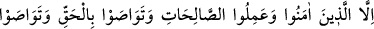

3. Bundan ancak îmân edip sâlih ameller işleyenler, birbirlerine hakkı tavsiye
edenler ve sabrı tavsiye edenler müstesnâdır.
“Bundan ancak” Allah’a yakînî bir ilimle “îmân edip” gerçekte Allah’tan başka
müessir olmadığını bilenler, zamanın perdesini yırtıp ortaya çıkanlar ve “sâlih ameller
işleyenler” müstesnâ. Onlar fazîletleri ve kalıcı hayatı elde edenler, sermayeleri olan
nûr-i isti‘dâdî üzerine kemâl nûrunu kazananlardır. İşte bunlar zarar etmeyen bir ticâret
üzeredirler. Zîrâ onlar değersiz fânîyi satıp, değerli bâkîyi almışlardır. Elden gidici
olanı, sâlih ve kalıcı olanla değiştirmişlerdir. Şu alışverişe bak, ne kadar da kazançlı!
Bu ifâde onların nefislerini kemâle erdirdiklerini beyân etmektedir.
Bazı mezhep mensupları bu âyete dayanarak büyük günah işleyen kimsenin
Cehennemde ebedî kalacağı sonucunu çıkarmıştır. Çünkü o hüsrânda olanlardan istisnâ
edilmemiştir. Bundan şu sonuç çıkar; istisnâ edilmeyenler mutlakâ hüsrânda
olacaklardır: Kâfir olarak ölürse edebî olarak; âsî olarak ölüp de mağfiret edilmemişse
Cehenneme girerek; mağfiret edilirse de yüce dereceleri kaçırarak hüsrândadır.
“Birbirlerine hakkı tavsiye edenler.” Bu ifâde, onların başkalarını kemâle
erdirdiklerini beyân etmektedir. Yâni onlar, birbirlerine inkârı aslâ mümkün olmayan,
sonuçlarının güzelliği dünya ve âhirette hiçbir zaman zevâl bulmayan sâbit emri tavsiye
ederler. Hayrın tamamı zâten O’dur. Allah’a îmân etmek, her zaman ve her işte O’nun
kitaplarına ve rasullerine ittibâ etmek gibi…
“Ve sabrı tavsiye edenler” beşerî yaratılış gereği nefsin meylettiği mâsiyetlere, edâsı
nefse zor gelen itâatlere ve Allah Teâlâ’nın kullarını tâbî tuttuğu imtihanlara karşı sabrı
tavsiye edenler müstesnâ.
“Sabrı tavsiye”, “hakkı tavsiye”nin içinde bulunmasına rağmen ayrıca tekrar
zikredilmesi, ona son derece îtinâ göstermek gerektiğini ortaya koymak içindir. Ya da
ilki Allah Teâlâ’yı râzı eden fiili yapmak mânâsına gelen “ibâdet” rütbesiyken, ikincisi
Allah’ın yaptığından râzı olmak demek olan “ubûdiyet” mertebesidir. Çünkü “sabır”dan
maksad sâdece nefsi meylettiği fiilden veya terkten uzak tutmak ve buna engel olmak
değildir. Bilâkis o, Allah Teâlâ’dan geleni güzel kabul etmek ve ondan zâhiren ve
bâtınen râzı olmaktır.
Allah Teâlâ burada kazancın sebebini belirtip ziyânın sebebini zikretmiyor. Sâdece
maksadı beyân etmekle yetiniyor. Maksad ise ebedî hayatı ve bitip tükenmez saâdeti
kazandracak şeyi beyân etmektir. Burada sayılanların dışındaki herşeyin insanı hüsrâna
götüreceği ve nasîbi azaltacağı hissettiriliyor. Ya da Allah Teâlâ hüsrâna götüren şeyleri
bizlere kereminden gizlemiştir. Çünkü hüsrân yönünde meseleyi kapalı tutmak keremdir.